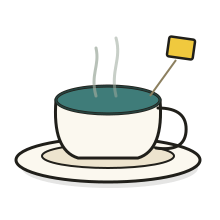
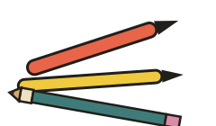
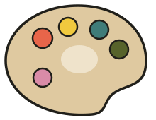
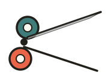
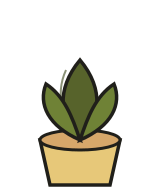

find your way around



Ask yourself
Answer a question below to see what it flags.

This page is a photo of a desk, read from left to right. Scroll, swipe, drag, or use the Left and Right arrow keys to move along it. Jump links for each section are on the first sticky note.

find your way around



Answer a question below to see what it flags.
